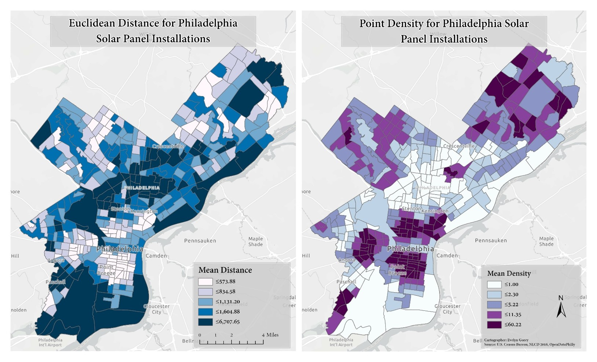
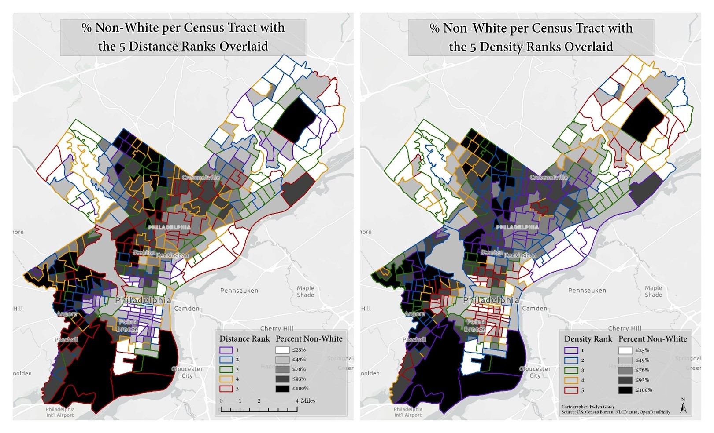

Philadelphia Solar Panel Locations Study

Below is a lab completed for Urban GIS (Fall 2019). Solar panel installation locations (obtained from OpenDataPhilly) were geocoded, and Euclidean Distance and point density was measured for each census tract based on tract distance and density from each installation. Both were ranked into five quantiles for statistical analysis and then compared to the demographic measure with the highest statistical significance (percentage of non-white/minority population). All data was calculated and presented at the census tract level. JMP, a statistical software, was used for the ANOVA test. Distance is measured in kilometers and is ranked for each tract.
Distance & Density of Solar Panel Installations

Figure 1 above displays the results of a Closest Facility analysis (a Network Analyst tool) to measure route length in feet from each existing L&I District Office to each census tract using the Philadelphia road network. The results show that regions such as Northeast Philadelphia, some of South Philadelphia, some of Northwest Philadelphia, and the River Wards areas could benefit from another office. This analysis takes into consideration distance by car only; public transit and population demographics are not included. The census tracts are shown in the choropleth map with five quantile breaks.
Demographic Variable Comparison

Upon performing an ANOVA test using JMP, it was discovered that the most statistically significant factor is the minority population variable (the F-ratios for distance density for minority population percentage are 10.8* and 16.4*, respectively). The percentage of minority population in Philadelphia is shown with a choropleth map with both distance and density ranks (1 being the farthest distance/lowest density of solar installations and 5 being the closest/most dense) overlaid.
get in touch
Thank you for stopping by! If you'd like to get in touch, please feel free to email me at the address below or send me a message on my LinkedIn.
Email Me
michelle.evelyn2@gmail.com